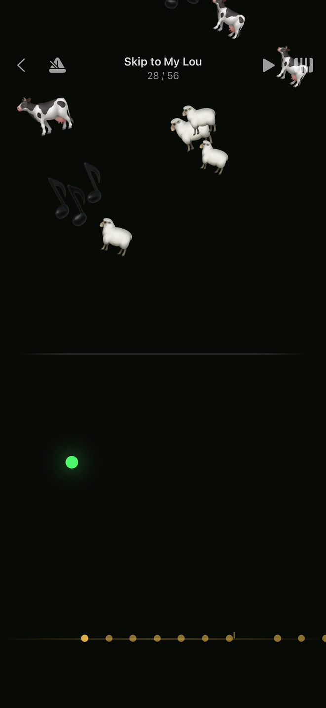
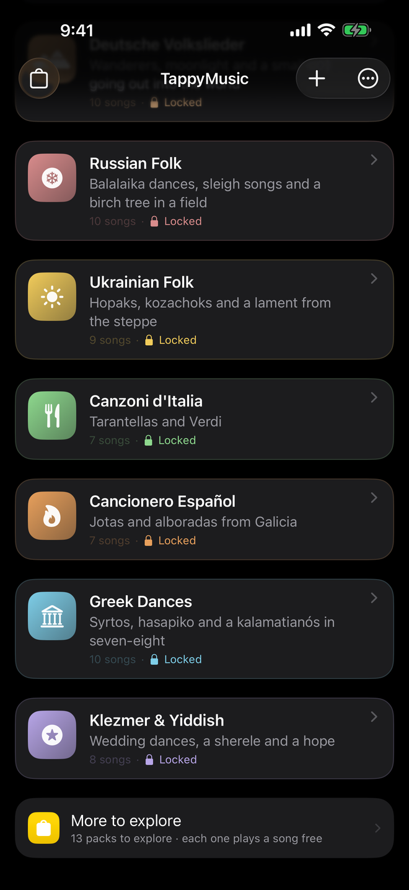

Para iPhone e iPad
Todo toque é nota certa
Seu filho toca uma música de verdade logo na primeira vez que encosta na tela.



Como se toca
Toque em qualquer lugar da tela e a próxima nota da melodia soa. Rápido, devagar, parando no meio e começando de novo: a música está sempre certa, e o ritmo é sempre dela.
Nada para errar
Não há nada para acertar nem nota errada. Qualquer lugar está certo.
Duas mãos, se quiser
A parte de cima toca a melodia, a de baixo toca mais grave, como uma mão esquerda. As duas ao mesmo tempo para as duas.
Cada toque floresce
As figuras escolhidas pela música saltam onde o dedo caiu, e as notas mais fortes lançam mais.
Para os pais
Sem anúncios. Sem assinaturas. Sem contas. Sem analytics, sem rastreamento, e nenhum dado sai do aparelho: o único servidor com que o app fala é a App Store. Funciona totalmente offline. As compras são únicas e compartilháveis com a família.
O que vem junto
128 melodias em 14 pacotes: cantigas, canções de ninar, clássica, folk e fogueira, músicas de festa, e um pacote por tradição. Tudo em domínio público, tocado por um sampler General MIDI de verdade com 83 instrumentos.
First Taps — dez clássicos infantis — é grátis e completo. Todo pacote pago toca uma melodia de graça: nada se compra sem ter ouvido.

Músicas da terra dos avós
Oito pacotes, cada um de uma tradição: tarantelas italianas, jotas espanholas, chansons francesas, canções folclóricas alemãs, danças gregas, músicas folclóricas russas, hopaks ucranianos e klezmer. Para uma família que vive longe de onde tudo começou, são as músicas que os avós cantavam — tocadas pelas mãos dos netos.
Aprender a tocar direito
Quando a criança quer mais do que liberdade, o menu de aprendizado está lá. Nada disso é obrigatório, e nada nunca aparece como uma nota.
Acompanhar
Uma bola quica e cai exatamente quando a próxima nota é devida, caindo pela gravidade: assim o ritmo se vê antes de chegar.
Ouvir
Escute como a música segue daqui, em velocidade cheia ou pela metade, uma frase por vez.
Ver como você tocou
No fim, um desenho de como ficou perto do ritmo escrito. Um desenho, não uma nota.
Deixe do seu jeito
Importe suas músicas
Qualquer arquivo MIDI vira uma música para tocar, com um assistente que tira a melodia do arquivo e deixa você ouvir a cada passo.
Crie seus cliparts
Monte um visual com os emojis do telefone e dê para a música que quiser.
TappyMusic Pro
Estas três coisas e todos os pacotes de melodias, numa compra só, compartilhada com sua família.

Seis emojis, e você criou algo
Digite qualquer emoji que seu telefone conheça: a prévia abaixo mostra exatamente o que vai saltar a cada toque, desenhada pelo mesmo motor com que o app toca. Escolha a cor atrás e dê o visual para a música que quiser.
Suas músicas e seus cliparts são as únicas coisas que nada pode baixar de novo, então o app grava tudo num arquivo zip comum que você guarda onde quiser.
Perguntas que os pais fazem
Para que idade é?
Para crianças de até cinco anos, e bem depois disso: as ferramentas de aprendizado estão lá para o dia em que a criança quiser tocar uma música direitinho.
Precisa de internet?
Não. Tudo funciona offline. O único servidor com que o app fala é a App Store, para as compras.
É um app de piano?
Não tem teclado. A tela inteira é o instrumento, e cada música toca com seu próprio som — caixinha de música, xilofone, violoncelo, piano e muitos outros.
Meu filho pode comprar algo sem querer?
Não. A loja e todas as compras ficam atrás de uma trava para adultos que uma criança pequena não consegue ler.
Funciona no iPad?
Sim, no iPhone e no iPad. Vire o iPad de lado e o lado esquerdo toca a música mais grave, para duas mãos.
Tem assinatura?
Não. Toda compra é única e fica com você para sempre, e o Compartilhamento Familiar cobre a família toda.
O app fala onze idiomas: português, inglês, alemão, francês, espanhol, italiano, japonês, coreano, grego, ucraniano e russo.
TappyMusic
Download gratuito, com dez cantigas para ficar. iPhone e iPad, onze idiomas, sem conta.